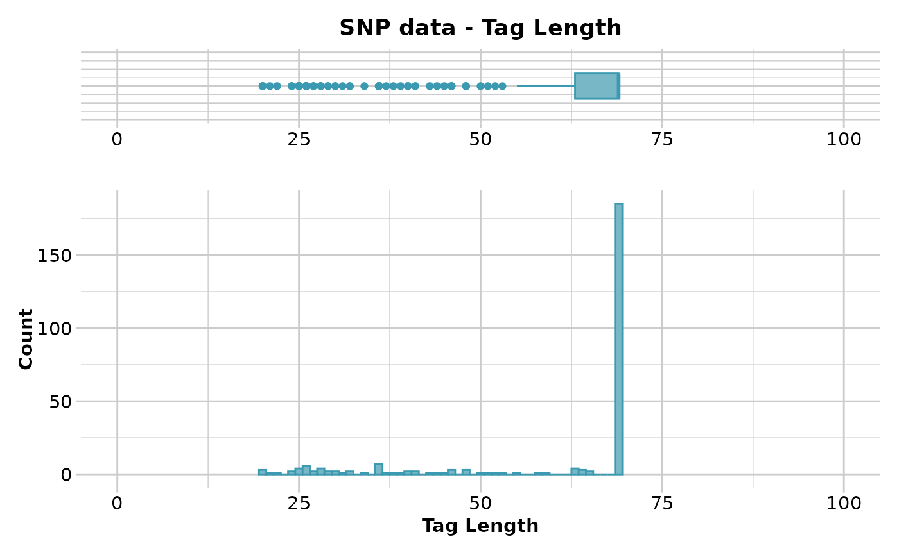
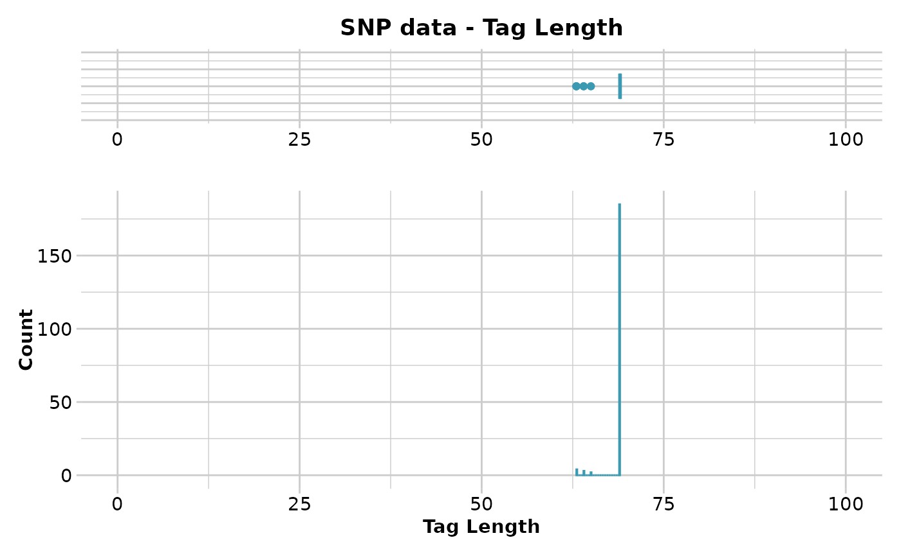
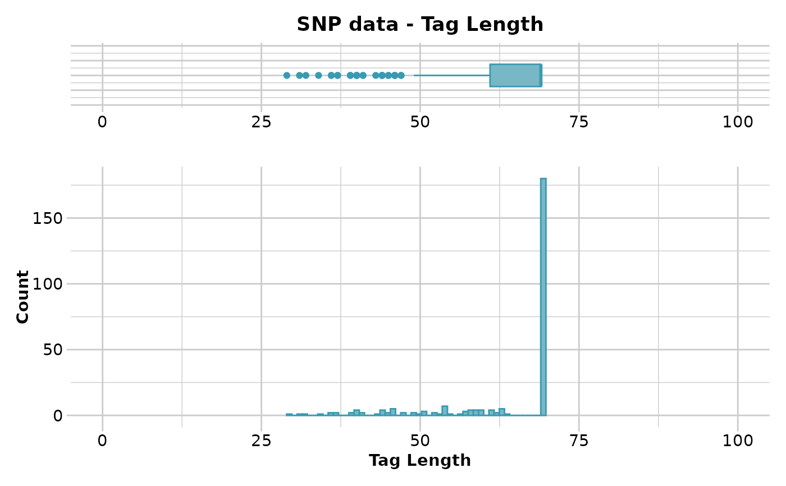

R/gl.filter.taglength.r
gl.filter.taglength.RdSNP datasets generated by DArT typically have sequence tag lengths ranging from 20 to 69 base pairs.
gl.filter.taglength(x, lower = 20, upper = 69, verbose = NULL)Name of the genlight object containing the SNP data [required].
Lower threshold value below which loci will be removed [default 20].
Upper threshold value above which loci will be removed [default 69].
Verbosity: 0, silent or fatal errors; 1, begin and end; 2, progress log; 3, progress and results summary; 5, full report [default 2, unless specified using gl.set.verbosity].
Returns a genlight object retaining loci with a sequence tag length in the range specified by the lower and upper threshold.
Other filter functions:
gl.filter.allna(),
gl.filter.callrate(),
gl.filter.heterozygosity(),
gl.filter.hwe(),
gl.filter.locmetric(),
gl.filter.maf(),
gl.filter.monomorphs(),
gl.filter.overshoot(),
gl.filter.pa(),
gl.filter.parent.offspring(),
gl.filter.rdepth(),
gl.filter.reproducibility(),
gl.filter.secondaries(),
gl.filter.sexlinked()
# \donttest{
# SNP data
gl.report.taglength(testset.gl)
#> Starting gl.report.taglength
#> Processing genlight object with SNP data
#> Reporting Tag Length
#> No. of loci = 255
#> No. of individuals = 250
#> Minimum : 20
#> 1st quantile : 63
#> Median : 69
#> Mean : 60.70196
#> 3r quantile : 69
#> Maximum : 69
#> Missing Rate Overall: 0.12
#>

#> Quantile Threshold Retained Percent Filtered Percent
#> 1 100% 69 185 72.5 70 27.5
#> 2 95% 69 185 72.5 70 27.5
#> 3 90% 69 185 72.5 70 27.5
#> 4 85% 69 185 72.5 70 27.5
#> 5 80% 69 185 72.5 70 27.5
#> 6 75% 69 185 72.5 70 27.5
#> 7 70% 69 185 72.5 70 27.5
#> 8 65% 69 185 72.5 70 27.5
#> 9 60% 69 185 72.5 70 27.5
#> 10 55% 69 185 72.5 70 27.5
#> 11 50% 69 185 72.5 70 27.5
#> 12 45% 69 185 72.5 70 27.5
#> 13 40% 69 185 72.5 70 27.5
#> 14 35% 69 185 72.5 70 27.5
#> 15 30% 69 185 72.5 70 27.5
#> 16 25% 63 194 76.1 61 23.9
#> 17 20% 46 207 81.2 48 18.8
#> 18 15% 37 217 85.1 38 14.9
#> 19 10% 30 230 90.2 25 9.8
#> 20 5% 26 244 95.7 11 4.3
#> 21 0% 20 255 100.0 0 0.0
#> Completed: gl.report.taglength
#>
result <- gl.filter.taglength(testset.gl,lower=60)
#> Starting gl.filter.taglength
#> Processing genlight object with SNP data
#> Removing loci with taglength < 60 and > 69
#> Completed: gl.filter.taglength
#>
gl.report.taglength(result)
#> Starting gl.report.taglength
#> Processing genlight object with SNP data
#> Reporting Tag Length
#> No. of loci = 194
#> No. of individuals = 250
#> Minimum : 63
#> 1st quantile : 69
#> Median : 69
#> Mean : 68.75773
#> 3r quantile : 69
#> Maximum : 69
#> Missing Rate Overall: 0.13
#>

#> Quantile Threshold Retained Percent Filtered Percent
#> 1 100% 69 185 95.4 9 4.6
#> 2 95% 69 185 95.4 9 4.6
#> 3 90% 69 185 95.4 9 4.6
#> 4 85% 69 185 95.4 9 4.6
#> 5 80% 69 185 95.4 9 4.6
#> 6 75% 69 185 95.4 9 4.6
#> 7 70% 69 185 95.4 9 4.6
#> 8 65% 69 185 95.4 9 4.6
#> 9 60% 69 185 95.4 9 4.6
#> 10 55% 69 185 95.4 9 4.6
#> 11 50% 69 185 95.4 9 4.6
#> 12 45% 69 185 95.4 9 4.6
#> 13 40% 69 185 95.4 9 4.6
#> 14 35% 69 185 95.4 9 4.6
#> 15 30% 69 185 95.4 9 4.6
#> 16 25% 69 185 95.4 9 4.6
#> 17 20% 69 185 95.4 9 4.6
#> 18 15% 69 185 95.4 9 4.6
#> 19 10% 69 185 95.4 9 4.6
#> 20 5% 69 185 95.4 9 4.6
#> 21 0% 63 194 100.0 0 0.0
#> Completed: gl.report.taglength
#>
# Tag P/A data
gl.report.taglength(testset.gs)
#> Starting gl.report.taglength
#> Processing genlight object with Presence/Absence (SilicoDArT) data
#> Reporting Tag Length
#> No. of loci = 255
#> No. of individuals = 218
#> Minimum : 29
#> 1st quantile : 61
#> Median : 69
#> Mean : 63.6
#> 3r quantile : 69
#> Maximum : 69
#> Missing Rate Overall: 0.04
#>

#> Quantile Threshold Retained Percent Filtered Percent
#> 1 100% 69 180 70.6 75 29.4
#> 2 95% 69 180 70.6 75 29.4
#> 3 90% 69 180 70.6 75 29.4
#> 4 85% 69 180 70.6 75 29.4
#> 5 80% 69 180 70.6 75 29.4
#> 6 75% 69 180 70.6 75 29.4
#> 7 70% 69 180 70.6 75 29.4
#> 8 65% 69 180 70.6 75 29.4
#> 9 60% 69 180 70.6 75 29.4
#> 10 55% 69 180 70.6 75 29.4
#> 11 50% 69 180 70.6 75 29.4
#> 12 45% 69 180 70.6 75 29.4
#> 13 40% 69 180 70.6 75 29.4
#> 14 35% 69 180 70.6 75 29.4
#> 15 30% 69 180 70.6 75 29.4
#> 16 25% 61 192 75.3 63 24.7
#> 17 20% 57 207 81.2 48 18.8
#> 18 15% 53 217 85.1 38 14.9
#> 19 10% 46 232 91.0 23 9.0
#> 20 5% 40 245 96.1 10 3.9
#> 21 0% 29 255 100.0 0 0.0
#> Completed: gl.report.taglength
#>
result <- gl.filter.taglength(testset.gs,lower=60)
#> Starting gl.filter.taglength
#> Processing genlight object with Presence/Absence (SilicoDArT) data
#> Removing loci with taglength < 60 and > 69
#> Completed: gl.filter.taglength
#>
gl.report.taglength(result)
#> Starting gl.report.taglength
#> Processing genlight object with Presence/Absence (SilicoDArT) data
#> Reporting Tag Length
#> No. of loci = 196
#> No. of individuals = 218
#> Minimum : 60
#> 1st quantile : 69
#> Median : 69
#> Mean : 68.40306
#> 3r quantile : 69
#> Maximum : 69
#> Missing Rate Overall: 0.04
#>
#> Quantile Threshold Retained Percent Filtered Percent
#> 1 100% 69 180 91.8 16 8.2
#> 2 95% 69 180 91.8 16 8.2
#> 3 90% 69 180 91.8 16 8.2
#> 4 85% 69 180 91.8 16 8.2
#> 5 80% 69 180 91.8 16 8.2
#> 6 75% 69 180 91.8 16 8.2
#> 7 70% 69 180 91.8 16 8.2
#> 8 65% 69 180 91.8 16 8.2
#> 9 60% 69 180 91.8 16 8.2
#> 10 55% 69 180 91.8 16 8.2
#> 11 50% 69 180 91.8 16 8.2
#> 12 45% 69 180 91.8 16 8.2
#> 13 40% 69 180 91.8 16 8.2
#> 14 35% 69 180 91.8 16 8.2
#> 15 30% 69 180 91.8 16 8.2
#> 16 25% 69 180 91.8 16 8.2
#> 17 20% 69 180 91.8 16 8.2
#> 18 15% 69 180 91.8 16 8.2
#> 19 10% 69 180 91.8 16 8.2
#> 20 5% 62 188 95.9 8 4.1
#> 21 0% 60 196 100.0 0 0.0
#> Completed: gl.report.taglength
#>
# }
test <- gl.subsample.loci(platypus.gl, n =100)
#> Starting gl.subsample.loci
#> Processing genlight object with SNP data
#> Warning: data include loci that are scored NA across all individuals.
#> Consider filtering using gl <- gl.filter.allna(gl)
#> Warning: Dataset contains monomorphic loci which will be included in the gl.subsample.loci selections
#> Subsampling at random 100 loci from dartR object
#> Completed: gl.subsample.loci
#>
res <- gl.report.taglength(test)
#> Starting gl.report.taglength
#> Processing genlight object with SNP data
#> Warning: data include loci that are scored NA across all individuals.
#> Consider filtering using gl <- gl.filter.allna(gl)
#> Reporting Tag Length
#> No. of loci = 100
#> No. of individuals = 81
#> Minimum : 46
#> 1st quantile : 69
#> Median : 69
#> Mean : 67.66
#> 3r quantile : 69
#> Maximum : 69
#> Missing Rate Overall: 0.08
#>
#> Quantile Threshold Retained Percent Filtered Percent
#> 1 100% 69 92 92 8 8
#> 2 95% 69 92 92 8 8
#> 3 90% 69 92 92 8 8
#> 4 85% 69 92 92 8 8
#> 5 80% 69 92 92 8 8
#> 6 75% 69 92 92 8 8
#> 7 70% 69 92 92 8 8
#> 8 65% 69 92 92 8 8
#> 9 60% 69 92 92 8 8
#> 10 55% 69 92 92 8 8
#> 11 50% 69 92 92 8 8
#> 12 45% 69 92 92 8 8
#> 13 40% 69 92 92 8 8
#> 14 35% 69 92 92 8 8
#> 15 30% 69 92 92 8 8
#> 16 25% 69 92 92 8 8
#> 17 20% 69 92 92 8 8
#> 18 15% 69 92 92 8 8
#> 19 10% 69 92 92 8 8
#> 20 5% 55 96 96 4 4
#> 21 0% 46 100 100 0 0
#> Completed: gl.report.taglength
#>